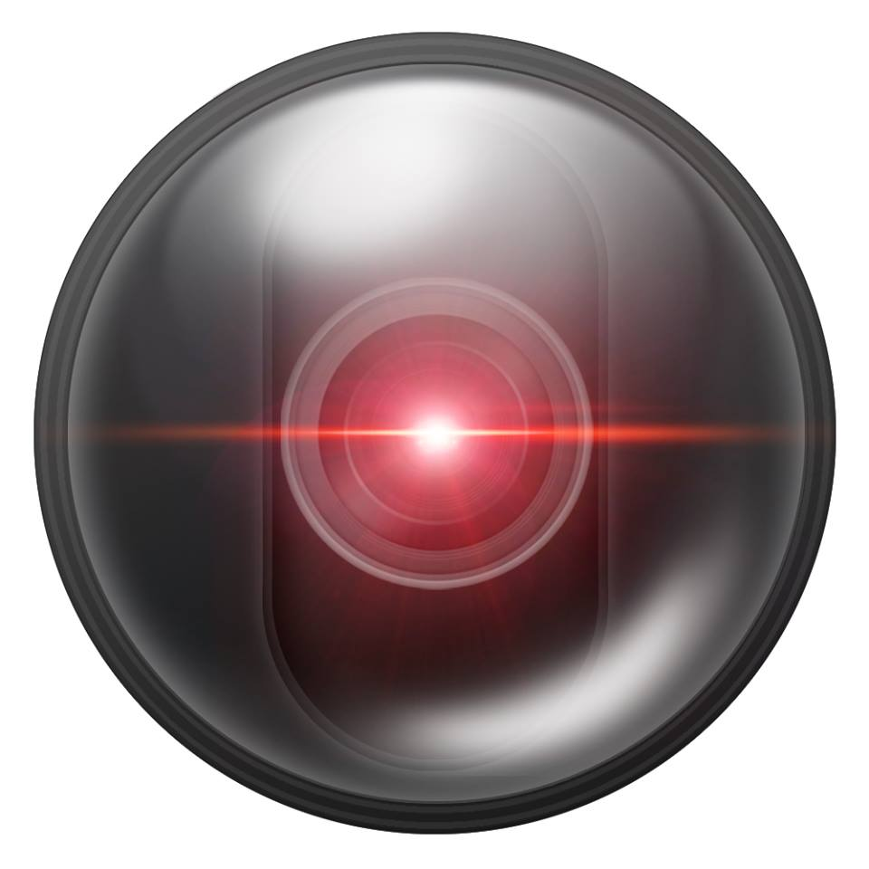

AndroidCamera

AndroidCamera is an client/server app that can tranform your Android device into a surveillance camera.
All you need is on or more Android Device and a PC.
You can download "AndroidCamera Server" (Windows or Linux Version) right here :
Informations
Configuration instructions:
- Download and install the Server App on your computer (download links below)
-
Download the Client App on your Android device
(get it on the Google Play Store here)
- Run the Server App on your computer
-
Run the Client App on your Android device and connect to the Server App with the
conection string displayed on the Server App
Additional Notes:
- Make sure your Android Device is on the same network/subnet than the computer
- AndroidCamera uses TCP port 40000 and UDP 40000 to 40006
Download AndroidCamera Server
V1.0 for Windows |
|
V1.0 for Linux |
|
|